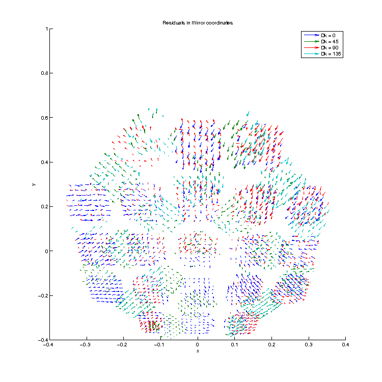

Motivation
State of the Art
| Experiment | Frequency (GHz) | $\ell$ range | $\alpha\pm\text{stat}(\pm\text{sys})$ | Calibration Method |
|---|---|---|---|---|
| QUaD | 100 | 200-2000 | $-1.89\pm2.24\pm0.5$ | Polarized Source |
| 150 | $+0.83\pm0.94(\pm0.5)$ | |||
| BOOM03 | 143 | 150-1000 | $-4.3\pm4.1$ | pre-flight polarized source |
| ACTPol | 146 | 500-2000 | $-0.2\pm0.5(-1.2)$ | "As-Designed" |
| WMAP7 | 41+61+95 | 2-800 | $-1.1\pm1.4(\pm1.5)$ | pre-launch polarized source / Tau A |
| BICEP2 | 150 | 30-300 | $-1\pm0.2(\pm1.5)$ | Dielectric Sheet |
| BICEP1 | 100+150 | 30-300 | $-2.77\pm0.86(\pm1.3)$ | Dielectric Sheet |
| $-1.71\pm0.86(\pm1.3)$ | Polarized Source | |||
| $-1.08\pm0.86(\pm1.3)$ | "As-Designed" | |||
| POLARBEAR | 150 | 500-2100 | $-1.08\pm0.2(\pm0.5)$ | Tau A |
| Planck | 30-353 | 100-1500 | $0.35\pm0.05(\pm0.28)$ | pre-flight source / Tau A |
| ACTPol | 150 | 600-1800 | $-0.07\pm0.09$ | metrology+modeling+planet obs. |
| Minami & Komatsu | 30-353 | 100-1500 | $0.35\pm0.14$ | Planck Data |
A majority of this table comes from James's SPIE paper , but now includes the Minami & Komatsu result . There are two primary takeaways from the table above. First, the latest two birefringence results from ACTPol and Minami & Komatsu are in tension. Second, both results have statistical precision of $\mathcal{O}(0.1^o)$, but neither report systematic errors so perhaps the first point isn't surprising. Regardless, this provides an important opportunity for us as we can not only aim to report our own competitive birefringence constraints, but also break the tension in either direction.
When we made our RPS observations in early 2018, we set a total precision goal of the measured per-pair polarization angle, $\phi_{pair}$, of $\sigma_\phi<0.1^o$ which, compared to the most recent reported values from other experiments, is still competitive. In the 2020 SPIE paper, we reported a total relative angle of $\sigma_{\phi_{pair}}$ equivalent to $0.083^o$, but we were still working out the systematics of the absolute angle at the time. As we'll show below, our current best on the absolute value is about an order of magnitude greater, but we believe we can achieve the $\sigma_{\phi_{pair}}<0.1^o$ in absolute terms by applying our lessons-learned to a new dataset which will be taken this 2021/2022 austral summer.
Systematic errors
While analysing RPS data, we were confronted to various sources of systematic effects. As we updated the pointing model and used a different approach to estimate source and mirror parameters, we have been able to reduce some of these systematic uncertainties. We have summarised a large number of possible systematic sources and their impact on the final measurement (detector polarisation angles) in this document. In most cases, these uncertainties are very small and yield to a limited bias on the polarisation angle. However, a few sources of uncertainties dominate our error budget and require further attention -- the two most notable being from RF coupling to the tilt meter which provides real-time tracking of the orientation of the RPS and from propagation of error from moon observations (or a lack thereof, rather) which are used to constrain the position/orientation of the mirror in absolute terms.
Tilt Meter High-F Coupling
During the 2017/2018 calibration campaign, the readout of the tilt meter was affected by electrical coupling of the mast lines with the 2-phase/50 pole stepper motor in the rotation stage. Whenever the rotation stage was moved, the tilt readout dropped to some consistently lower, noiser value. When the stage completed its motion the tilt reading increased, but there was a chance that the tilt did not return to the previous level before the stage was moved and instead would settle at some other value. This looks like a discontinuous step in the tilt readout. Thus, the relative tilt from raster-to-raster is unreliable. Further, because the stage was rotated between when the tilt calibration was completed and when the mast was zeroed to do test movements, we cannot guarantee the the absolute tilt of the RPS either.

Note that when the stage not commanded for extended periods of time (during fridge cycles for instance), no stepping is seen and a diurnal fluctuation in tilt (likely from the sun) can be measured.
Pol Angle Relative Calibration
The coupling amplitude of the stage while in motion is consistent between movements, so by isolating those moments, we can reacquire a measure of the relative angle fluctuation.

At the most pessimistic, we can take the min and max deviation from the moving-stage DC offset and call that the upper limit on the systematic uncertainty of the relative calibration. This comes out to $\pm0.09^o$.
Ideally, this also allows us to directly subtract the relative angle deviations to further long-timescale scattering during the analysis downstream which will get us to less than that, but that feature still needs to be implemented into the analysis.
Pol Angle Abs Cal
Unfortunately, the amplitude of the DC-offset-while-moving is dependent entirely on the circuitry as it was set up during the RPS campaign, so we can only establish rough upper limits. The maximum recorded offset was $~0.25^o$ and evidence suggests that the DC offset can swing equally in either direction. In the most pessimistic scenario, I calibrated the tilt meter at one extreme and then leveled the mast at the other which gives us an upper limit of $0.5^o$, which easily dominates any other source of systematics.Root Cause and Fixes
The high-frequency coupling was ultimately caused by a combination of poor shielding of the tiltmeter from the rotaiton stage and improper grounding of the tilt meter signal wires. We've been able to reproduce this phenomenon in the lab to a similar degree as seen at pole and establish a sufficient shielding/grounding scheme such that any interference is subdominant to the tilt meter noise floor ($O(50\text{nV}$).
Aside: Upper limit on mast swaying
If we assume that the diurnal fluctuations in tilt is from heating of the mast's guy wires, then the source position would also be moving as the mast sways throughout the day. Using the same upper limit from the relative calibration ($\pm0.09^o$) we can calculate the apparent change in Azimuth of the source position:
$$\sigma_{Az} = \tan^{-1}\left(\frac{H_{mast}\tan\left(\sigma_{tilt}\right)}{D_{src}}\right)$$Where $H_{mast}$ is the height of the mast from its pivot point (i.e. just the roof of MAPO) and $D_src$ is the distance from BICEP3 to the source, which are both known to be $H_{mast}=12\text{m}$ and $D_{src}=195.5\text{m}$. This gives us $\sigma_{Az} = \pm0.005^o$ which is currently subdominant to other systematics.
Beam fit residuals
When fitting for beam parameters in raw mount coordinates, we noticed residuals at the level of 5-10%, as shown below.
We tentatively identified it as amplitide dependent noise coming from the demodulation routine, something that also been
identified in FFBM measurement campaigns.
In any case, as we don't have a lot of good quality data from 2017 and therefore probably can't learn much from that, we plan
to take data at various chop rates (likely 10-15-20Hz) for this campaign so that we can better estimate and quantify systematics
that are associated with various chop rates.
Residuals in reconstructed RPS beam centers
Quick Review of Mirror/Source Analysis
RPS measurements for BICEP3 were taken in January 2017 and 2018, with the mirror installed. To derive individual
detector polarisation angles, it is crucial to first build a reliable pointing model that includes the mirror,
and to know the source and mirror position with respect to the telescope with a very good precision. While working
on RPS data analysis, we made some changes in the Beam Map Pointing Model (BMPM) we use to analyse RPS data, as
presented in .
To determine the position of the mirror and the source, the best way to proceed is to first observe the Moon with
the mirror on, allowing to determine first the mirror position, and then the source. However, no Moon observations
with the mirror on were taken in 2017. It is still possible to determine the source and mirror position by using data taken
in 2017, but the derived positions suffer from higher uncertainties. In our SPIE paper ,
we presented the results he obtained using RPS data taken in January 2018 - polarisation angles and efficiency for
800 detector pairs.
We have since then re-analysed RPS data with a different method to estimate source and mirror positions.
In this updated method, we estimate beam parameters in raw mount coordinates (before applying any pointing model), and then
estimate source and mirror positions. To do so, we minimise the difference between beam coordinates derived from RPS observation
using the (updated) BMPM, and "canonical" beam parameters from CMB observations. This analysis is summarised in the simplified flow
chart in the figure below.

- Mirror parameters in 2017 and 2018
- Mirror and source parameters in 2018 - I: Methods and preliminary results
- Mirror and source parameters in 2018 - II: Results with updated pointing model & Residuals
- mirror height = 1.4592m
- mirror tilt = 44.7743 deg
- mirror roll = 0.1054 deg
- source height = 8.9717m
- source distance = 195.5 m
- source azimuth = -177.5938 deg
As said previously, our method to estimate the source and mirror positions relies on matching beam centers derived from RPS
measurements using the BMPM, with the CMB derived beam centers (see Figure 1.1). Ideally, the two sets of beam centers should be
identical after estimating the optimal source and mirror parameters. However, we observe a pattern of residuals that we try to
characterise and understand, as shown in Figure 1.4 below, and detailed in
.
Deck-dependent residuals
RPS data and CMB data are taken at different dk angles (0/45/90/135 vs 23/68/203/248), and CMB data is taken without the mirror on (i.e. the pointing model is different), and at a different time of the year. While this shouldn't have any impact, we might suffer from various systematic effects, due to e.g the mirror, or gravitational flexture at different dk angles (as hinted by Justin in . In particular, we observe dk dependent residuals and show that:
- RPS data at different dk angles yield to different mirror roll angle (up to ~0.03 deg difference)
- For a given RPS data set at one dk angle, using CMB derived beam centers at different dk angles as reference also yields to different mirror roll angle (up to ~0.04 deg difference)
RPS orientation
In previous calibration campaigns, the RPS was rotating from -180deg to 180 with respect to gravity, whatever the deck angle of the instrument. This setup is convenient because it allows to maximise detector response for dk 0/90, however for dk 45/135 detectors don't reach their peak response at any point in the RPS modulation curve. This can lead to uncertainties in the determination of the beam centers, that contributes to dk-dependent residuals that we see. We therefore propose to tilt the RPS with respect to the dk angle and not with respect to gravity, so that the modulation curve can be effectively maximal for each dk angle. However, this could induce a new systematic contribution since the RPS orientation would be different for each schedule - we would therefore need to have an estimation of this effect.
To address these sources of residuals, we propose to adapt the dk angles used for RPS observation as well as the RPS orientation, as detailed in the calibration schedule.
Mirror-related residuals?
We also investigated the hypothesis that the residuals could arise from mirror systematics, such as small deformations
in the mirror. If this was case, we should have residuals that are the same for Moon and RPS observations in 2017
(in 2018 we don't have Moon observations to compare to), or residuals that corresponds to a specific position on the mirror
once the dk angle rotation is corrected. However, we couldn't detect any mirror-related pattern in dk dependent residuals,
as shown for example in Figure 1.5 below.

Measurement repeatability
In 2018, two RPS data sets were taken at dk 45 - a complete and a partial one. Using only detectors that have measurements in the two data sets, we have shown that while measurement repeatablity is overall good. As detailed in , the estimation of the mirror roll parameter changes by ~9% between the two dk 45 data sets. We believe that this variability is likely due to external factors affecting the source and/or mirror position (mast swaying, sun, etc.). Again, we estimate that these effects would have a limited impact on the final measurement, but we still need to have an estimation of measurement repeatability so that we can correctly propagate the associated errors. The calibration schedule that we propose below takes into account these constraints.